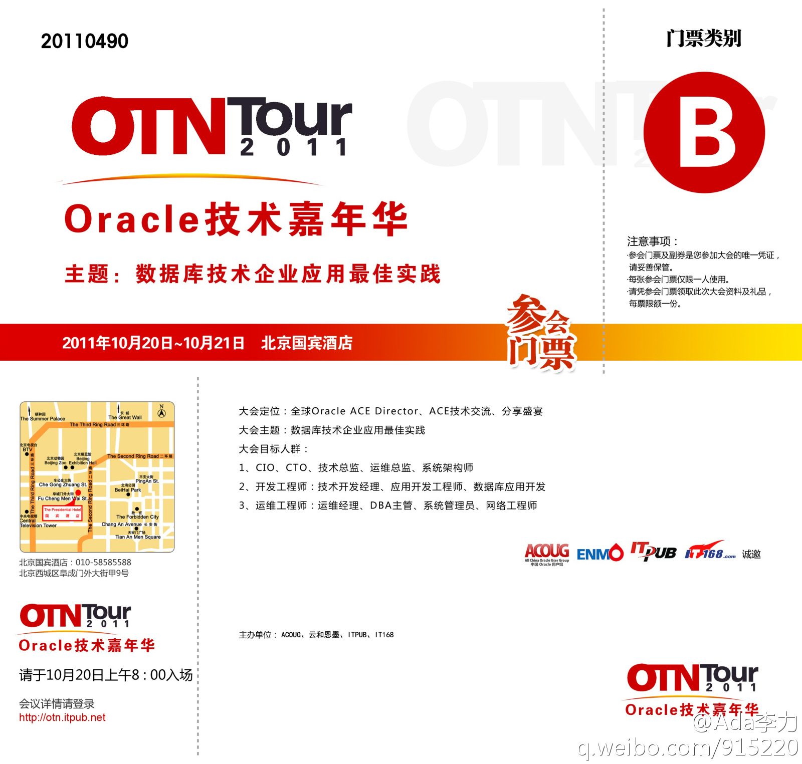

从技术架构上来讲, 混搭互联网的企业应用会是个趋势. Via @刘松--甲骨文@宫文学Richard:互聯網應用vs企業應用：1.因特網應用:a.規模(訪問量、用戶量、數據量)，b.客戶驅動（因此重視用戶體驗、快速響應；外部驅動，類比CRM）。2.企業應用:a.複雜性(業務規則)，b.資源驅動(內部驅動，類比ERP)。這兩者可以互相學習和借鑒。@程朝晖-Chris @程勇-PeterCheng @Ada李力 你們的看法呢？
又被表扬了, 说点啥好呢? @laiyonghao:接触过几个公司的社区经理（或技术社区接口、负责人），Oracle 的 @Ada李力 是印象最好的，因为讲到 O/S 家的东西有什么我不喜欢、不满意的地方的时候，她不会跳起来死命地维护东家的面子，懂得倾听反对者的声音。社区经理不能一听到有人反对就说你水平低、你不识宝啊，我不说你咋知道你不如人呢？
2011 Oracle技术嘉年华将于10月20,21日在北京召开 网页链接 现将原价780元的参会门票一张回馈"架构师"微群里的朋友, 在群里此微博下留言即可, 说明现从事工作所采用的技术或产品, 然后, 看谁的运气好被选中吧. 常发言的朋友有优先权哈. 
听过不少同事在公司部门间换来换去的, 各种职位尝试个遍, 一直奇怪怎么会这么方便. 前几天才知道"self service"里有一个选项"Release Employment Information for Transfer", 就是为此服务. 员工只要找到了接收部门, 就可以用这个功能, 两个月后, 不管原来老板放不放人, 都可以成功转岗.